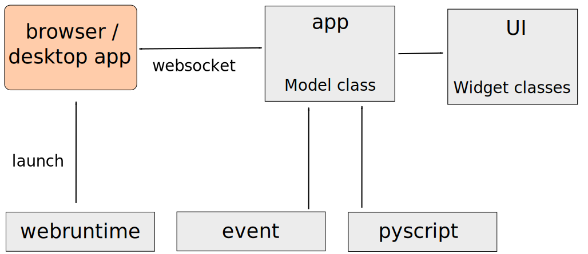

Getting started(翻訳中)¶
Dependencies¶
純粋なPythonとクロスプラットフォームなので、Pythonとブラウザがある環境で（ほぼ）動作するはずです。 FlexxはPython 3用に書かれていますが、レガシーなPython（Python 2.7）にもインストールできます。 Pypyでも動作します。Flexxは、Firefox、Chrome、および（わずかな制限付きで）IE / Edgeを積極的にサポートしています。
event、webruntime および pyscrip サブパッケージには依存関係は必要ありません。 app パッケージと ui サブパッケージには、Tornado（純粋なPythonパッケージ）とブラウザが必要です。デスクトップアプリのようなアプリを実行するには、Firefoxをインストールすることをおすすめします。
開発者がテストを実行するには、次のものが必要です。
- pytest and pytest-cov (get them via conda or pip)
- flake8 (get it via conda or pip)
- Nodejs
- Firefox
Current status¶
Flexx is in development and is in alpha status. Any part of the public API may change without notice. Status of subpackages:
- The
flexx.pyscriptmodule is in a good state and has ~ 100% test coverage. - The
flexx.eventmodule recently received an overhaul. Minor tweaks can be expected. - The
flexx.webruntimemodule works well, but needs tests and should support more runtimes. - The
flexx.appmodule is increasingly stable. - The
flexx.uimodule is stabalizing and most changes will be related to the addition of new widgets.
Installation¶
conda install flexx -c conda-forgepip install flexx- Old school:
python setup.py install - Clone the repo and add the root dir to your PYTHONPATH (developer mode, not possible for Python 2.7)
Motivation¶
Flexxの主な動機は、ウェブ（すなわちブラウザ技術）が、（インタラクティブな）
Flexxの目的は、デスクトップアプリケーションとWebアプリケーションを作成するための単一のアプリケーションフレームワークを提供することです。ライブラリ技術を利用することで、ライブラリ自体は比較的小さく純粋なPythonになり、広く簡単に利用できます。
PyScript（PythonからJavaScriptへの変換）を利用することで、ライブラリ全体がJavaScriptの行なしで書かれます。これにより、対応する「flexx.js」を維持するよりも開発が容易になります。さらに、ユーザーはJavaScriptで実行されるコールバックメソッドを簡単に定義でき、必要に応じてより高いパフォーマンスを実現できます。
Pythonで書かれたライブラリでないPythonライブラリは、ユーザーが簡単にコントリビューターにならないため、生き延びるのにはずっと時間がかかります。これは、scikit-imageやMayaviのようなライブラリーの成功の理由の1つです。 。 FlexxはPythonとPyScriptの組み合わせで書かれているので、そのユーザコミュニティは開発において積極的な役割を果たす可能性が高いです。
Flexx overview¶
Flexxはモジュール式に設計されており、パッケージのレイアウトに反映されています。 最も一般的に使用されるサブパッケージは「flexx.ui」です。 しかし、それが依存するテクノロジは、それぞれ独立した別々のサブパッケージで定義されていて単体で使用できます。 例えば「import flexx.webruntime」は、アプリケーションフレームワーク（Tornadoも）全体をインポートしません。
上の画像は、Flexxの構造についての概要を示しています。 「webruntime」モジュールの唯一の目的は、アプリケーションを実行するためのランタイムを起動することです。これはブラウザ、またはデスクトップアプリケーションのように見えるXULアプリケーションです。「event」モジュールは、アプリケーションのさまざまな部分を簡単に接続できる強力なプロパティおよびイベントシステムを提供します。 「pyscript」モジュールは、PythonコードをJavaScriptに変換するシステムを提供します。アプリケーションモジュールでは、アプリケーションのメインループが定義され、Webランタイムが接続するサーバー（websocket経由）が実行されます。さらに、EventクラスとScriptクラスの機能を組み合わせて「Model」クラスにします。そのインスタンスがJavaScriptで対応する表現を持つクラスです。プロパティは双方向で同期され、Pythonコード（または正確にはPyScript）でオブジェクトのJSバージョンのメソッドをサブクラスで定義できます。これはすべてのウィジェットの基本クラスですが、基本的にPythonとJS間の緊密な接続が必要な他の状況でも役立ちます。 uiモジュールですべてのウィジェットが実装されています。
このドキュメントでは、各サブパッケージごとに個別のリファレンスが含まれています。 uiモジュールから始めて、他のモジュールについては必要になるまで気にしないことをお勧めします。
Notebooks¶
Githubにnotebooks のコレクションがあります。notebooksのチュートリアルは、リファレンスドキュメントの各サブパッケージのサンプルセクションにも記載されています。
ウィジェットを含むnotebooksは、Liveまたはnbviewerで見るのが最適な方法です。